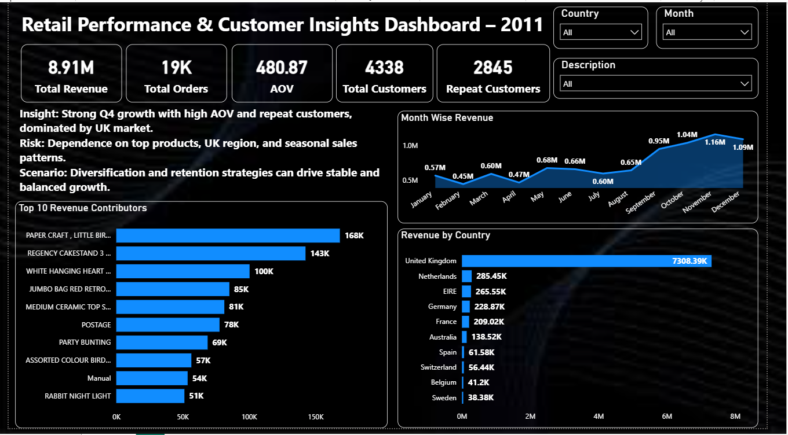

Power BIRetail Performance & Customer Insights Dashboard
Built from 5,000+ rows to track monthly revenue, top revenue contributors, and revenue by country across UK, EU, and international markets. ₹8.91M revenue across 19K orders from 4,338 customers, with 2,845 repeat buyers — powered by 12+ custom DAX measures.